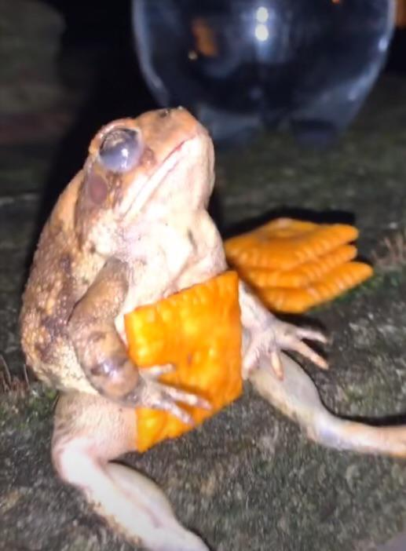

🐸 🐸 🐸 🐸 🐸 WOWOOWOWOWOW BIG FROG 🐸 🐸 🐸 🐸 🐸

This is my FROG website
✨ Now we're doing a list of frog facts stuff ✨
- Frogs have ears. Male frogs have bigger ears than females. Their ears are just behind their eyes.
- Frogs ‘drink’ through their skin.
- There isn’t actually a biological difference between frogs and toads. Toads are just very warty frogs.
- Flying frogs can glide for 12 to 15 metres, as they have extremely effective webbed feet.

CLICK HERE TO LEARN MORE ABOUT FROGS!!!